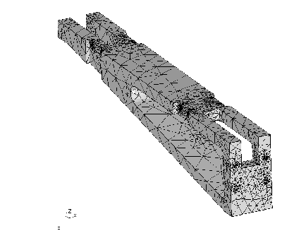

Next: How to check an
Up: Tips and Hints
Previous: How to run cgx
Contents
How to deal with cad-geometry
In general hexahedra-elements perform better than tets but if the mesh should be derived from a cad-geometry it is often more convenient to create a tetrahedra mesh as to modify or rebuild the geometry to make it meshable with hexahedra-elements. The following section gives some hints which alternatives are available.
- The CAD format is supported by a stand alone translator (see the calculix home pages). In this case the user can mesh the surfaces with structured- [13] (elty setname tr3 etc.) or unstructured triangles [14] (elty setname tr3u etc.). The user might modify this surface mesh until he is happy with it. The surface mesh can then be filled with tets created by an external auto-mesher called from within cgx (mesh setname tet). The cgx uses the tet-mesher from NETGEN [4] for this task.
Therefore cgx can only generate a tet-mesh if NETGEN is installed and the program ng_vol (part of NETGEN) is accessible. For the full functionallity replace the original ng_vol in the NETGEN package with the modified program ng_vol from the cgx-distribution and build it again. This version regards a target element size.
- For CAD models in STEP- or IGES-format you may consider to use a tet-mesher like NETGEN [4] which often generates quite nice tet-meshes with very few user interaction. You can read this meshes with cgx and combine them with cgx-geometry and meshes. Then create your boundary conditions etc. You might read the native-netgen format (.vol) instead of abaqus-format because this includes the 2D meshing regions in separate sets which can be used to apply boundary conditions (``cgx -ng file.vol'', see ''Program Parameters''). See ``prnt'' how to list the available sets.
- A simple step-reader is integrated in cgx (cgx -step filename). It can deal with points and lines. This is sufficient for axis-symmetric structures like a rotor but the experienced user might also use the following approach for more complex geometries: You start with a file containing a 2D-section, subdivide it in mesh-able surfaces and sweep it in the 3rd dimension to create your geometry (see swep). If features exist in the 3rd dimension then this features must be included in the 2D-section. Sweep the 2D-section to the location were the feature starts, then right to the end and at last to the end of the geometry. Delete the unwanted bodies before and after the feature. You might project the sweped sections to a target surface if the feature is shaped in the 3rd dimension (see proj).
Sometimes the geometry consists of several (maybe even identical) parts which are arranged on different positions in space. This is called assembly. When cgx is started with the parameter ``-stepsplit'' instead of ``-step'' it will write the single parts to separate directories using their original coordinate systems. The user can prepare meshable geometry or meshes based on them. But he must use the filenames which he finds there. The final meshed assembly can be build afterwards by calling the fbl-file which was written by cgx. This fbl-file contains the original step-commands to position and eventually duplicate the single geometries/meshes from the subdirectories.
The following section describes the process to generate a tet-mesh with cgx based on a cad model:
Figure 13:
CAD-geometry meshed with tet-elements
|  |
- Install and use the propper interface program to convert the cad format to fbd format (You find example data (vda,iges,step) in CalculiX/cgx_x.x/examples/cad)
(ie: vda2fbd halter.vda > halter.fbd).
Remark: In some cases the header of the vda file causes trouble and must be modified to make the program run.
- Start cgx with that file (cgx -a halter.fbd). Usually some warnings appear on the screen but the program will fix that automatically (triggered by the parameter -a). After all geometry has been read the program will merge points and lines to close the volume. If problems occur the user might start the program with option -b instead of -a (cgx -b halter.fbd). Then no automatic post-processing is done and the user has to prepare the geometry manually. See the commands merg, div, qdiv, qlin, rep.
- Then all nurbs related surfaces might be shaded (optional, the openGL extension library GLu is used for that matter). This has to be done manually by typing first ``rep all'' and then ``plus si all''. The whole process might need some time. If a surface points inwards it is not illuminated and appears only dark grey. Flip the surfaces in a way that its normal direction points outwards (use ''qflp''. Press the ''a'' key to selet the ``all'' mode and then select a correctly oriented surface by pressing key ''s'', all other surfaces will immediatelly use the same orientation). The orientation fix can also be done later after the surface mesh is available by selecting a wrong oriented element (dark grey) with 'qflp' (key ``e'').
- Define the element type (see elty). In most cases it is advisable to use triangles first (tr6u) and not directly tetraeders (te10) because this has the advantage that the surface mesh can be interactively improved before the tets are generated. Remark: If you choose tets from the beginning, you must identify a set which holds an existing body (if only one body exists, its the set 'all') or you must create a body with ``body ! all'' before you can assign tets using the ``elty'' command.
- Type the command ''mesh all'' to generate the surface-mesh (see mesh).
- Visualize and check the mesh (''plot f all``). If the command ''prnt info'' lists ''ed:0'' then the mesh is closed and ready to be used for tet meshing.
- If some surfaces can not be meshed then modify the divisions of the lines of this surfaces (see ''qdiv'' or ''qmsh'') or chose the structured element type tr6 for this surfaces. Or define a certain element-size transition with ``elty''. See especially the command ''qmsh'' to fix parts of the surface-mesh in a convenient way since this command combines several other ones (for convenient usage of ``qmsh'' display the elements ``plot e all y`` together with faces ``plus f all`` and add the lines with ``plus lp all r`` and ``plus ld all r``). You may switch on the element edges with ''view'' elem.
In some cases surfaces are not meshable when you combined surfaces with ``qmsh''. The referenced NURBS might be too small to cover the whole surface. Without such a related nurbs no unstructured mesh can be created. If structured elements are no solution you may delete the related NURBS from the surface definition with ''qsur'' and key 'b'. Then store the surface in a set and create a new NURBS with ``nurs ! setname''. The surfaces stored in the set will produce NURBS based on the Coons algorithm [13]. If the surface shape matches a primitive shape you may also use the ''qshp'' or ''shpe'' command to assign the matching shape.
- Generate the tet mesh (``mesh all tet``). A target-size for the tet-elements can be specified if ``ng_vol'' from the cgx distribution was installed (for example ``mesh all tet 2.5`` will define a maximum element-size of ``2.5''). If the model consists of several unconnected parts separate them in single sets and mesh one after the other (see seta, qadd, qrem, comp).
- Create sets of nodes, faces or elements to create boundary conditions (if you had not created them already based on the geometry) and export them with ''send''.
- Create the input deck for ccx with an editor and start the calculation.
- Look at the results with cgx (cgx results.frd).
Next: How to check an
Up: Tips and Hints
Previous: How to run cgx
Contents
root
2017-10-07